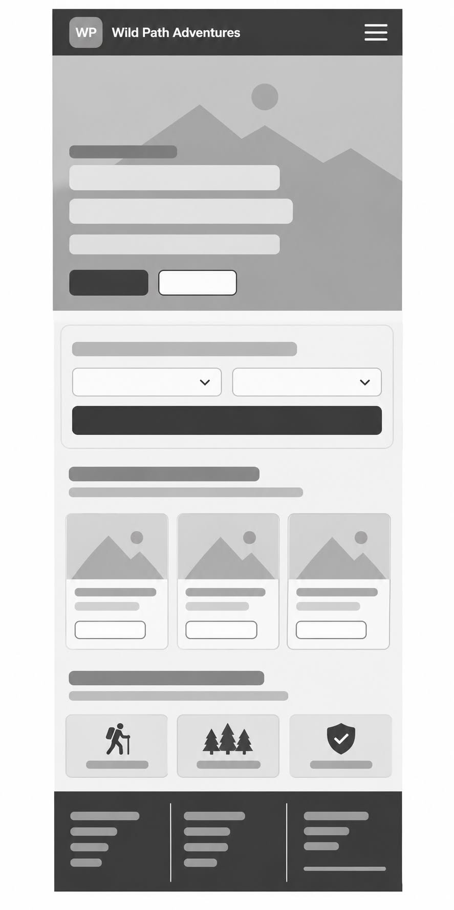
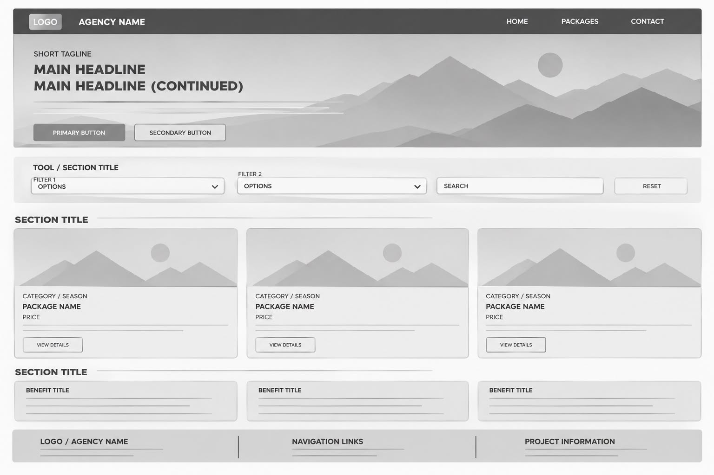

Forest Pine (#1B4332)
Usage: Main header, navigation bar background, primary section headings (h1, h2), and footer background.
WDD 231 Individual Project Plan
Accessible, budget-friendly nature and adventure travel agency website.
Selected Name: Wild Path Adventures
Optional Domain Availability: wildpathadventures.org
Reason for Selection: The name clearly communicates the agency's core mission: outdoor exploration and nature trails ("WildPath") combined with accessible, cost-effective pricing ("Budget Adventures") for solo backpackers, families, and groups—distinguishing it from traditional tourism.
Wild Path Adventures provides a three-page online hub connecting budget-conscious travelers with affordable outdoor and nature experiences. The website delivers:
Target audience questions that guide the site's content and interactive features:
The palette pairs deep forest green with terracotta accents against clean neutral backgrounds to evoke nature.
#1B4332)Usage: Main header, navigation bar background, primary section headings (h1, h2), and footer background.
#B84322)Usage: Primary call-to-action buttons, active navigation wayfinding highlights, price tags, and focus outlines.
#F8F9FA)Usage: Main page background color to ensure clean visual breathing room and white space.
#FFFFFF)Usage: Card surfaces, search containers, form panels, and modal dialog backgrounds.
#1F2937)Usage: Body paragraphs, list items, labels, and descriptive text on light surfaces.
Two Google Fonts are selected for clear visual hierarchy and fast readability across mobile and desktop viewports:
Where Applied: Page titles h1, section headings, h2, h3, brand logo text, navigation links, buttons, and package price.
Example: Real Outdoor Adventures for Real Budgets — $115 / person
Where Applied: Body paragraphs, route descriptions, scenario lists, form inputs/labels, modal details, and footer text.
Sample: Discover guided hikes, river kayaking, mountain camping, and eco-trails designed for solo backpackers, families, and group outings.
Black-and-white structural sketches illustrating the responsive layout of index.html across mobile (320px) and desktop viewports, including the hamburger menu, hero banner, quick adventure finder, 3-column seasonal highlights grid, and footer links.

